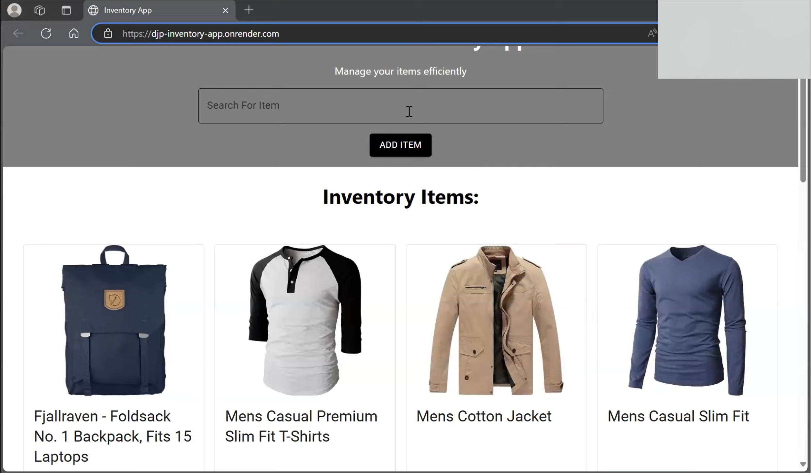
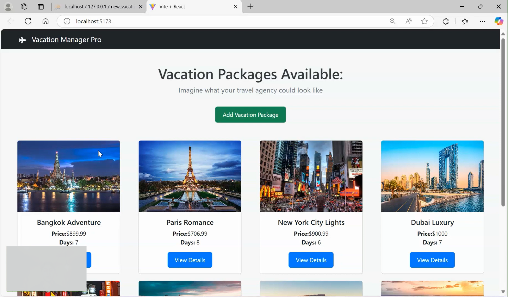
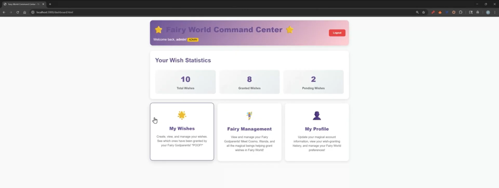
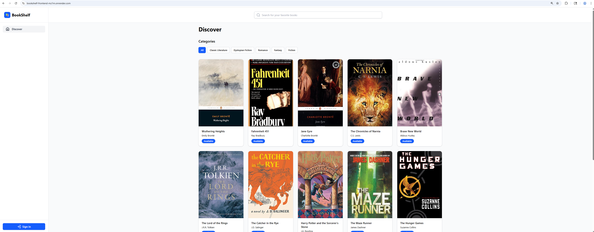

Final Portfolio
Hi! My names Juan Figueroa, this portfolio showcases my work and growth as a software engineer during my apprenticeship at HP Inc. It includes an overview of my experience, detailed descriptions of key projects, and reflections on my learning journey. Each project highlights the skills I developed, the technologies I used, and the impact I made.
Overview of Apprenticeship
- Host Company: HP Inc.
- Duration: Jan 2025 – April 2026
- Link to Deployed Portfolio Website: Deployed Portfolio
- Who I am: Fast learning software engineer with experience building and maintaining production full stack applications using TypeScript, PHP/Drupal, and modern frontend frameworks.
- Why I do what I do: Motivated by understanding the “why” behind systems, solving real world problems, and continuously growing through challenging, high impact work.
- Areas of Interest: Improving processes, strengthening test coverage, reducing deployment risk, CI/CD improvements, frontend/backend development, security, automation.
- Teams I have worked on: HP's external developers portal (hp.io)
- Impact at HP Inc.: Optimized CI/CD pipelines, delivered production enhancements, designed and implemented backend APIs, shipped frontend features, identified and resolved bugs and security issues.
Projects
Inventory Application
- Link to repo: Inventory App GitHub
- Presentation: YouTube Demo
- Screenshot:

- Purpose/Goals: Build a full-stack inventory tracking app for an e-commerce company, demonstrating mastery of three-tier architecture and RESTful CRUD operations.
- Overview of Features:
- View all items in inventory (React front-end, Express/Sequelize back-end)
- View individual item details
- Add new items via form
- Edit item details
- Delete items from inventory
- Bonus: User and Order models, search, cart, mobile support, admin validation
- Tech Stack: React.js (Presentation), Express.js (Business Logic), Sequelize (Data), Node.js, SQL
- System Architecture: Three-tiered (Presentation, Business Logic, Data)
- Skills Demonstrated:
- Full-stack development (front-end & back-end)
- RESTful API design
- Database modeling and CRUD operations
- Agile teamwork, pair programming, code reviews
- Version control (Git, branching, PRs)
- Task management (GitHub Projects)
- Deployment (Render/other solutions)
- Unit testing (Jest)
- Career Relevance: Building a full stack project provides comprehensive understanding of software applications, enhances versatility, and improves collaboration and design skills.
- Reflection: This project brought together all the skills learned over seven weeks, from basic programming to advanced UI and database integration. It was a valuable experience in team development, problem-solving, and applying best practices in software engineering.
Final Bootcamp Project
- Link to repo: VacationBookingApp GitHub
- Presentation: YouTube Demo
- Screenshot:

- Overview: VacationBookingApp is a full-stack web application for managing and booking vacation packages. It uses a Laravel back-end API and a React.js front-end, allowing users to browse, add, edit, and book vacation packages. Designed for easy development, testing, and deployment.
- Project Structure:
- Back-end: Laravel 12 API server (controllers, models, migrations, factories, seeders, RESTful routes, Pest tests)
- Front-end: React.js 19 SPA (components, styles, Cypress tests, Vite config)
- Features:
- Browse vacation packages (list, details)
- Add, edit, delete vacation packages (admin)
- Book vacation packages (user)
- RESTful API (CRUD operations)
- Responsive UI with Bootstrap
- Authentication (Laravel Sanctum)
- Testing: Pest (PHP), Cypress (JS)
- Tech Stack: Laravel 12, React.js 19, Bootstrap, Cypress, Pest, Vite, Faker, Sanctum
- Skills Demonstrated:
- Full-stack development (front-end & back-end)
- API design and integration
- Database modeling and migrations
- Authentication and security
- Automated testing (Pest, Cypress)
- Responsive UI design
- Deployment and environment configuration
- Purpose/Goals: Build a full stack vacation booking app that integrates a modern UI, robust API, and secure authentication to manage and book vacation packages.
- Career Relevance: Building a full stack vacation booking app demonstrates proficiency in integrating multiple technologies, managing real-world data, and deploying scalable solutions. It prepares engineers for roles in modern web development and product delivery.
- Reflection: This project was a collaborative effort that deepened my understanding of full-stack development, API integration, and agile teamwork. I learned to balance user experience, security, and maintainability while delivering a robust application.
Back End Module Project
- Link to repo: Wish Granting API GitHub
- Presentation: YouTube Demo
- Screenshot:

- Overview: The Wish Granting API is a back-end service that lets users authenticate (Google OAuth 2.0 → JWT or local username/password), create and manage “Wishes” and “Fairies,” and generate humorous genie twists for each wish via Google Gemini. The API exposes RESTful CRUD operations on core resources and implements robust authentication and authorization.
- Project Structure:
- Node.js/Express server
- Passport (Google OAuth 2.0), JWT authentication
- Sequelize ORM + SQLite database
- RESTful routes for Wishes, Fairies, Users
- Authorization middleware, error handling
- Unit tests (Jest, Supertest)
- Features:
- CRUD operations for Wishes, Fairies, Users
- User authentication (Google OAuth 2.0, local login, JWT)
- Password hashing (bcrypt)
- Authorization: users can only access/edit their own data; admin can access/edit all
- Associated data: wishes linked to users and fairies
- Admin super-user role
- AI-generated genie outcomes (Google Gemini)
- Helpful error responses and middleware
- API documentation (OpenAPI, planned)
- Unit testing (Jest, Supertest)
- Tech Stack: Node.js, Express.js, Passport (Google OAuth 2.0), JWT, Sequelize ORM, SQLite, bcrypt, Gemini, Jest, Supertest
- Skills Demonstrated:
- Back-end API development
- Authentication and authorization
- Database modeling and migrations
- Agile teamwork, pair programming, code reviews
- Version control (Git, branching, PRs)
- Task management (GitHub Projects)
- Deployment (Render/other solutions)
- Unit testing (Jest, Supertest)
- Purpose/Goals: Build a secure, scalable back-end API that enables user authentication, wish management, and role-based access, while integrating modern testing and AI features.
- Career Relevance: Developing a back-end API with authentication, authorization, and robust testing is critical for modern software engineering. This project demonstrates skills in security, data modeling, and collaborative development.
- Reflection: This project strengthened my understanding of API design, authentication, and authorization. Working in a team, I learned to implement secure endpoints, integrate external APIs, and deliver maintainable code through testing and code reviews.
Front End Module Project
- Link to repo: Music Discovery App GitHub
- Screenshot:

- Overview: Music Discovery App is a modern, interactive front-end web application inspired by Spotify. It allows users to search for music, view playlists, control playback, and visually explore their listening queue with a unique circular interface. Integrates with the Spotify Web API for real-time playback and user data.
- Project Structure:
- src/Api/authorize.tsx: Spotify OAuth2 authentication
- src/Components/MusicPlayer/: albumArt, musicPlayer, playBar, playerControls, queueRing
- src/Components/Playlist/: playList, playListItem
- src/Components/MusicSearch.tsx, Navbar.tsx, SearchBar.tsx, SpotifyAPIHandler.tsx
- src/contexts/: ColorSchemeContext, PlayerContext, PlaylistContext, SearchContext, SpotifyAPIContext
- src/utils/GradientFinder/
- App.tsx, main.tsx, public/, package.json, vite.config.ts
- Features:
- Spotify OAuth2 Authentication (PKCE)
- Now Playing View (track info, album art, playback controls)
- Circular Queue Ring (visualizes upcoming tracks)
- Interactive Player Controls (play, pause, skip, seek)
- Dynamic Color Scheme (UI adapts to album art colors)
- Music Search (tracks, artists)
- Responsive Design (MUI, CSS)
- Tech Stack: React.js 19, TypeScript, JavaScript, CSS, Vite, Material UI (MUI), Chroma.js, Lodash, Spotify Web API
- Skills Demonstrated:
- Front-end SPA development
- API integration and authentication
- Component-based architecture
- Global state management (Context API)
- Responsive UI design
- Agile teamwork, pair programming, code reviews
- Version control (Git, branching, PRs)
- Task management (GitHub Projects)
- Deployment (Netlify or similar)
- Unit testing (Jest, React Testing Library)
- Purpose/Goals: Build a visually engaging, interactive music discovery platform that leverages Spotify’s API and modern UI/UX principles.
- Career Relevance: Developing a complex front-end SPA with real-time API integration and responsive design is highly relevant for modern web engineering roles. It demonstrates skills in user experience, accessibility, and scalable architecture.
- Reflection: This project challenged me to create a seamless, dynamic user interface and manage global state across multiple components. I gained valuable experience in API integration, UI design, and collaborative development.
Deployment Module Project
- Link to repo: BookShelf GitHub
- Deployed App: Live BookShelf App
- Presentation: YouTube Demo
- Screenshot:

- Overview: BookShelf is a modern, full-stack library management system built with React.js, GraphQL, and PostgreSQL. Users can browse books, check out copies, and admins can manage the entire catalog. The app demonstrates deployment, CI/CD, and web security best practices.
- Project Structure:
- Frontend: React.js 19.2.0, Vite, Apollo Client, React Router DOM, Tailwind CSS, shadcn/ui, Lucide React
- Backend: Node.js, Express.js, Apollo Server, Prisma ORM, PostgreSQL, JWT, bcryptjs
- GraphQL API: Queries and mutations for books, editions, checkouts, users
- CI/CD: GitHub Actions, deployment to cloud provider
- Features:
- Browse library by category
- Search for books
- View book details and editions
- Checkout system with due date tracking
- Track active and returned books
- User authentication and registration
- Admin panel for book and edition management
- Inventory tracking
- Role-based access control
- Responsive UI and modern design
- Tech Stack: React.js, Node.js, Express.js, Apollo Server, Apollo Client, Prisma ORM, PostgreSQL, JWT, bcryptjs, Tailwind CSS, shadcn/ui, Lucide React, Vite
- Skills Demonstrated:
- Full-stack development (front-end & back-end)
- API design and integration (GraphQL)
- Database modeling and migrations
- Authentication, authorization, and security
- Agile teamwork, pair programming, code reviews
- Version control (Git, branching, PRs)
- Task management (GitHub Projects)
- Deployment and CI/CD (GitHub Actions, cloud provider)
- Purpose/Goals: Build a robust, full-stack library management system that demonstrates deployment, CI/CD, and web security best practices, integrating modern UI, GraphQL API, and secure authentication.
- Career Relevance: Deploying a full-stack application with CI/CD, cloud hosting, and secure authentication is essential for modern software engineering roles. This project showcases skills in scalable architecture, DevOps, and real-world product delivery.
- Reflection: This project brought together all the skills learned throughout the apprenticeship, from frontend and backend development to deployment and security. I gained valuable experience in cloud deployment, CI/CD pipelines, and building maintainable, secure applications as part of a collaborative team.